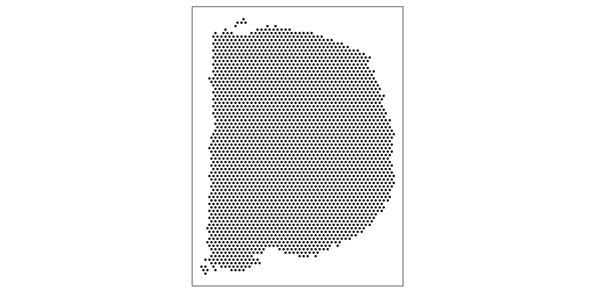
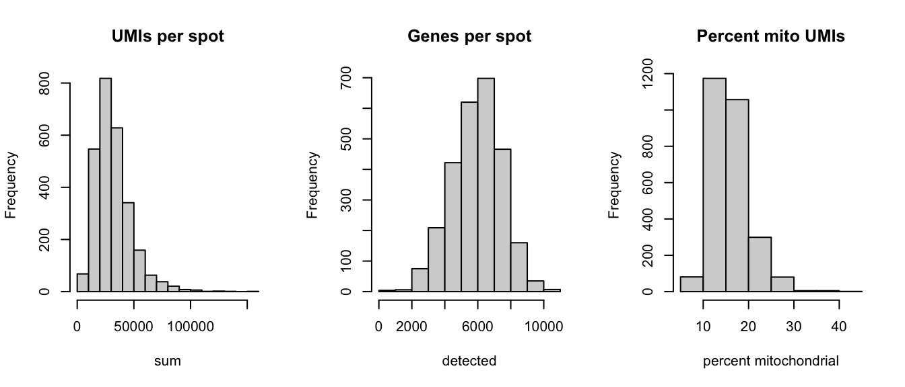
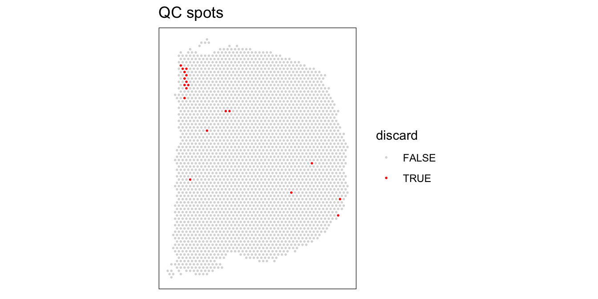
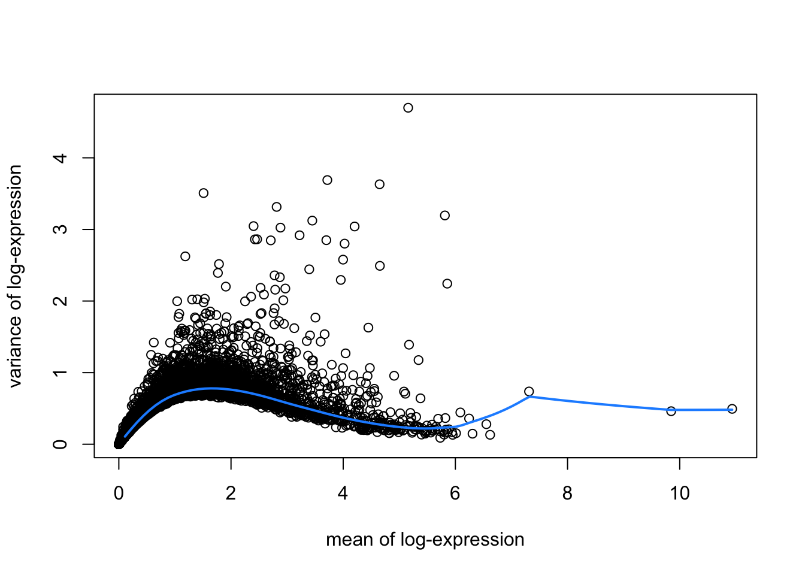
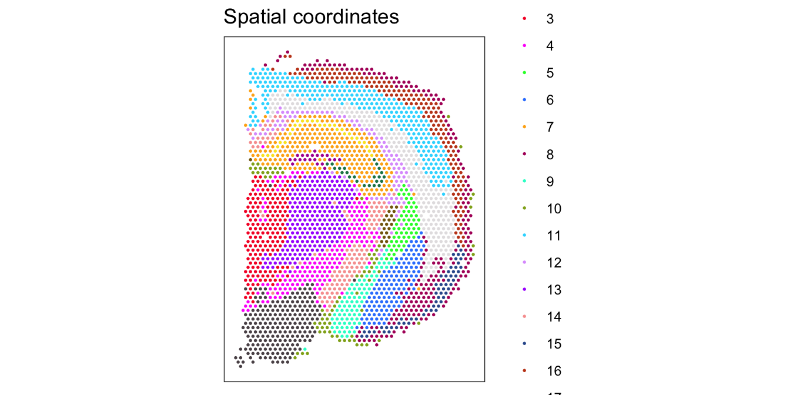
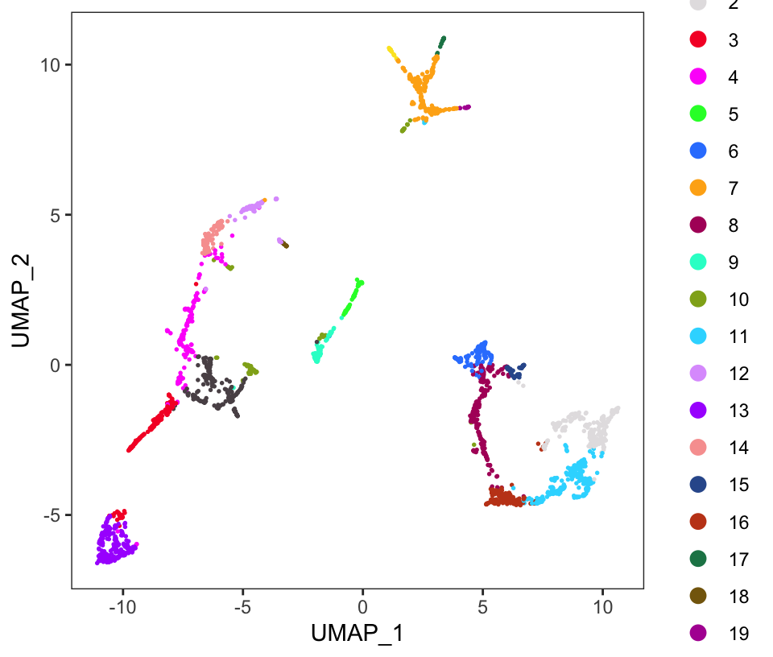
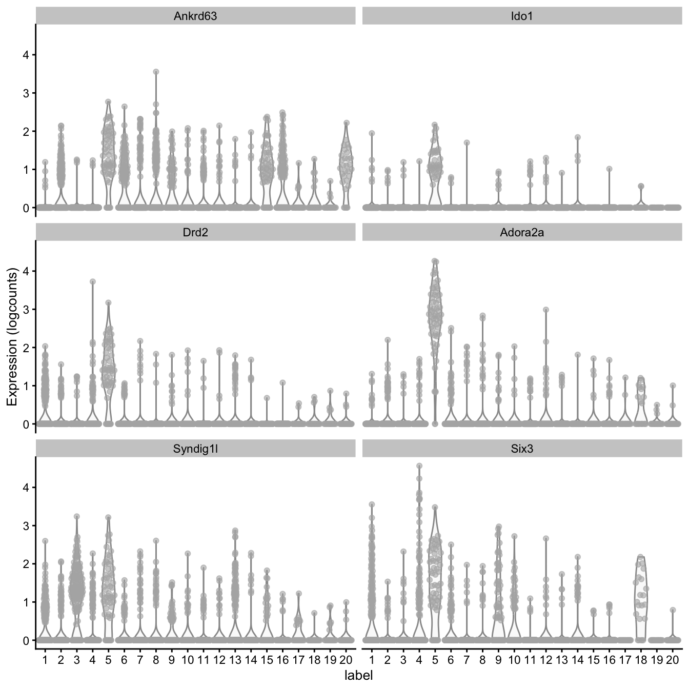

This workflow analyzes a mouse coronal brain section dataset from the 10x Genomics Visium platform. This dataset was generated by 10x Genomics, and the raw data files are publicly available from the 10x Genomics website.
15.1 Description of dataset
This dataset measures transcriptome-wide gene expression on a Visium slide spanning one hemisphere of a mouse coronal brain section. For experimental details, see the 10x Genomics website.
Due to the small size of the mouse brain and the dimensions of the Visium slide (6.5mm x 6.5mm), the measurements span an entire brain hemisphere. Therefore, we can use this dataset to compare gene expression profiles between major anatomical regions of the mouse brain. Due to the small size of cells in the mouse brain, each spot can contain up to 50 cells. In this dataset, we do not know the exact number of cells per spot.
15.2 Load data
The dataset is available in SpatialExperiment format from the STexampleData package.
As an initial check, plot the spatial coordinates (spots) in x-y dimensions on the tissue slide. This confirms that the object has loaded correctly, and the orientation matches the 10x Genomics website.
We use visualization functions from the ggspavis package to generate plots.
library(ggspavis)
# plot spatial coordinates (spots)plotSpots(spe)

15.4 Quality control (QC)
Subset object to keep only spots over tissue.
# subset to keep only spots over tissuespe <- spe[, colData(spe)$in_tissue ==1]dim(spe)
[1] 32285 2702
Calculate spot-level QC metrics using the scater package (McCarthy et al. 2017), and store the QC metrics in colData.
Select filtering thresholds for the QC metrics by examining distributions using histograms.
# histograms of QC metricspar(mfrow =c(1, 3))hist(colData(spe)$sum, xlab ="sum", main ="UMIs per spot")hist(colData(spe)$detected, xlab ="detected", main ="Genes per spot")hist(colData(spe)$subsets_mito_percent, xlab ="percent mitochondrial", main ="Percent mito UMIs")

par(mfrow =c(1, 1))# select QC thresholdsqc_lib_size <-colData(spe)$sum <5000qc_detected <-colData(spe)$detected <1000qc_mito <-colData(spe)$subsets_mito_percent >30# number of discarded spots for each QC metricapply(cbind(qc_lib_size, qc_detected, qc_mito), 2, sum)
qc_lib_size qc_detected qc_mito
9 4 11
# combined set of discarded spotsdiscard <- qc_lib_size | qc_detected | qc_mitotable(discard)
discard
FALSE TRUE
2683 19
# store in objectcolData(spe)$discard <- discard
Plot discarded spots in x-y coordinates on the tissue slide to check if there is any biologically meaningful spatial pattern. This would be problematic, since it would mean we are removing biologically informative spots.
# check spatial pattern of discarded spotsplotQC(spe, type ="spots", discard ="discard")

There is one small region with some concentrated discarded spots at the top-left. However, this does not appear to correspond to any specific known anatomical region of interest. We assume that these are low-quality spots, and filtering them out will not cause problems in the biological interpretation.
We filter out the low-quality spots from the object.
Min. 1st Qu. Median Mean 3rd Qu. Max.
0.1615 0.6597 0.9083 1.0000 1.2342 4.8973
hist(log10(sizeFactors(spe)), xlab ="log10 (size factors)", main ="Size factors")
# calculate logcounts and store in objectspe <-logNormCounts(spe)assayNames(spe)
[1] "counts" "logcounts"
15.6 Feature selection
Identify a set of top highly variable genes (HVGs), which will be used to define cell types. We use methods from scran(Lun, McCarthy, and Marioni 2016), and first filter out mitochondrial genes (since these are very highly expressed and not of biological interest here).
# fit mean-variance relationshipdec <-modelGeneVar(spe)# visualize mean-variance relationshipfit <-metadata(dec)plot(fit$mean, fit$var, xlab ="mean of log-expression", ylab ="variance of log-expression")curve(fit$trend(x), col ="dodgerblue", add =TRUE, lwd =2)

# select top HVGstop_hvgs <-getTopHVGs(dec, prop =0.1)length(top_hvgs)
[1] 1274
Note there are a few extremely highly expressed genes, which influence the fitted mean-variance relationship. We check the names of these genes to decide whether they should be removed as outliers.
These appear to be biologically meaningful genes, so we leave them in.
15.7 Spatially-aware feature selection
Alternatively, run nnSVG(Weber et al. 2023) to identify a set of top spatially variable genes (SVGs) instead of HVGs.
Here, we run nnSVG using a small subset of the dataset for faster runtime. We select a subset of the data by subsampling on the set of spots and including stringent filtering for low-expressed genes. For a full analysis, we recommend running nnSVG on all spots and using alternative filtering parameters (for Visium data from mouse brain tissue), which takes around 45 minutes for one Visium slide on a standard laptop using multiple cores.
library(nnSVG)
# subsample spotsn <-100set.seed(123)ix <-sample(seq_len(n), n)spe_nnSVG <- spe[, ix]# filter low-expressed and mitochondrial genes# using very stringent filtering parameters for faster runtime in this example# note: for a full analysis, use alternative filtering parameters (e.g. defaults)spe_nnSVG <-filter_genes( spe_nnSVG, filter_genes_ncounts =50, filter_genes_pcspots =5)
Gene filtering: removing mitochondrial genes
removed 0 mitochondrial genes
Gene filtering: retaining genes with at least 50 counts in at least 5% (n = 5) of spatial locations
removed 32074 out of 32272 genes due to low expression
# re-calculate logcounts after filtering# using library size factorsspe_nnSVG <-logNormCounts(spe_nnSVG)# run nnSVG# using a single core for compatibility on build system# note: for a full analysis, use multiple coresset.seed(123)spe_nnSVG <-nnSVG(spe_nnSVG, n_threads =1)# investigate results# show resultshead(rowData(spe_nnSVG), 3)
Run principal component analysis (PCA) on the set of top HVGs using scater(McCarthy et al. 2017), and retain the top 50 principal components (PCs) for downstream analyses. Also run UMAP on the top 50 PCs, and retain the top 2 UMAP components for visualization purposes.
# compute UMAP on top 50 PCsset.seed(123)spe <-runUMAP(spe, dimred ="PCA")reducedDimNames(spe)
[1] "PCA" "UMAP"
dim(reducedDim(spe, "UMAP"))
[1] 2683 2
# update column names for easier plottingcolnames(reducedDim(spe, "UMAP")) <-paste0("UMAP", 1:2)
15.9 Clustering
Perform clustering to define cell types. We apply graph-based clustering using the Walktrap method implemented in scran(Lun, McCarthy, and Marioni 2016), applied to the top 50 PCs calculated on the set of top HVGs.
# store cluster labels in column 'label' in colDatacolLabels(spe) <-factor(clus)
Visualize the clusters by plotting in (i) spatial (x-y) coordinates on the tissue slide, and (ii) UMAP dimensions.
# define custom color palettecolors <-unname(palette.colors(palette ="Polychrome 36"))# plot clusters in spatial x-y coordinatesplotSpots(spe, annotate ="label", palette = colors)

# plot clusters in UMAP dimensionsplotDimRed(spe, type ="UMAP", annotate ="label", palette = colors)

15.10 Marker genes
Identify marker genes by testing for differential gene expression between clusters, using the binomial test implemented in findMarkers in scran(Lun, McCarthy, and Marioni 2016).
# set gene names as row names for easier plottingrownames(spe) <-rowData(spe)$gene_name# test for marker genesmarkers <-findMarkers(spe, test ="binom", direction ="up")# returns a list with one DataFrame per clustermarkers
# plot log-fold changes for one cluster over all other clusters# selecting cluster 5interesting <- markers[[5]]best_set <- interesting[interesting$Top <=5, ]logFCs <-getMarkerEffects(best_set)pheatmap(logFCs, breaks =seq(-5, 5, length.out =101))
# plot log-transformed normalized expression of top genes for one clustertop_genes <-head(rownames(interesting))plotExpression(spe, x ="label", features = top_genes)

Lun, Aaron T. L., Davis J. McCarthy, and John C. Marioni. 2016. “A Step-by-Step Workflow for Low-Level Analysis of Single-Cell RNA-seq Data with Bioconductor.”F1000Research 5 (2122). https://doi.org/https://doi.org/10.12688/f1000research.9501.2.
McCarthy, Davis J., Kieran R. Campbell, Aaron T. L. Lun, and Quin F. Wills. 2017. “Scater: Pre-Processing, Quality Control, Normalization and Visualization of Single-Cell RNA-seq Data in R.”Bioinformatics 33 (8): 1179–86. https://doi.org/https://doi.org/10.1093/bioinformatics/btw777.
Weber, Lukas M., Arkajyoti Saha, Abhirup Datta, Kasper D. Hansen, and Stephanie C. Hicks. 2023. “nnSVG for the Scalable Identification of Spatially Variable Genes Using Nearest-Neighbor Gaussian Processes.”Nature Communications 14: 4059. https://doi.org/https://doi.org/10.1038/s41467-023-39748-z.